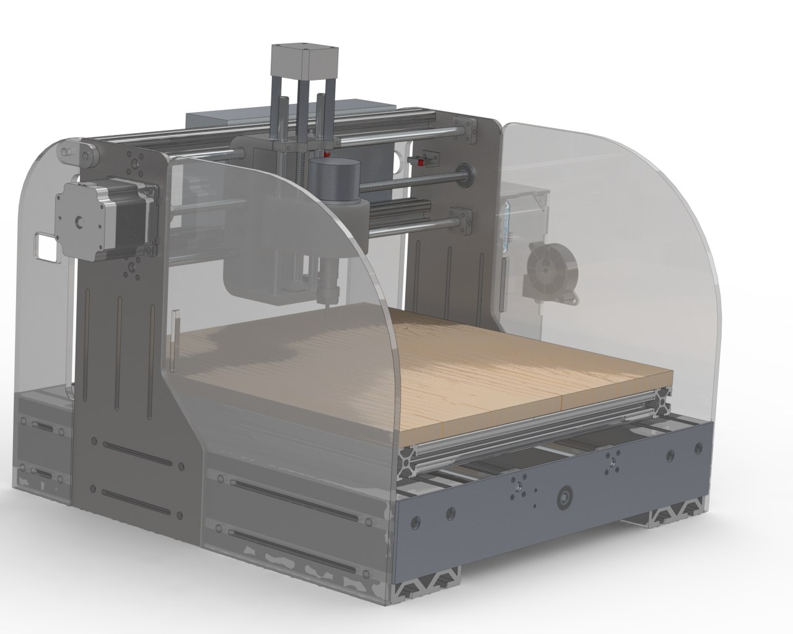
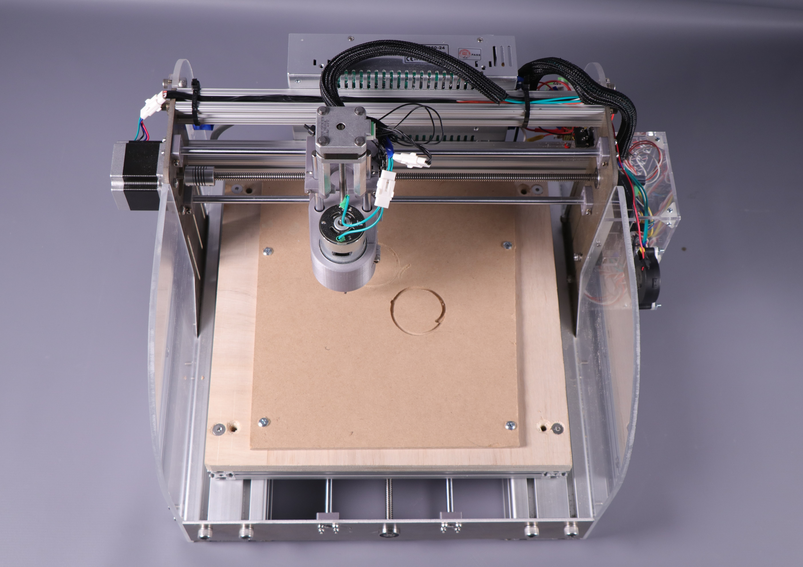
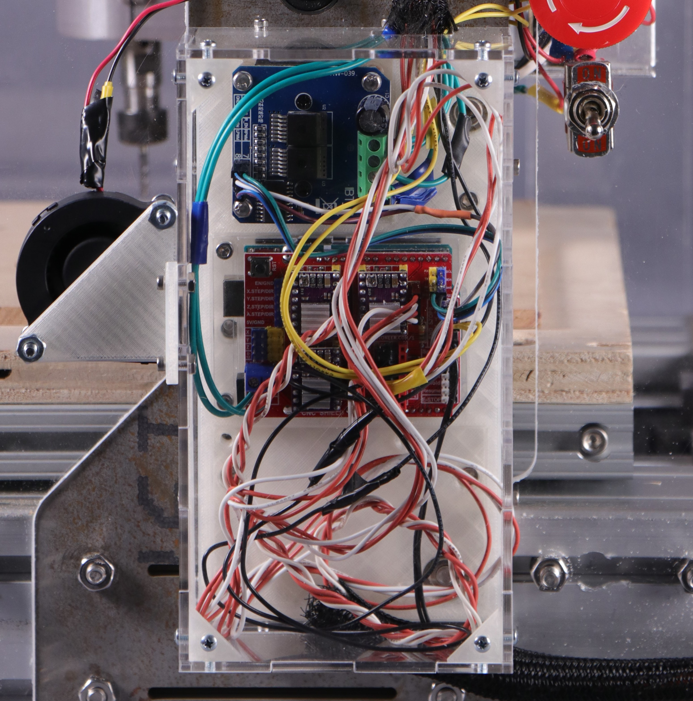
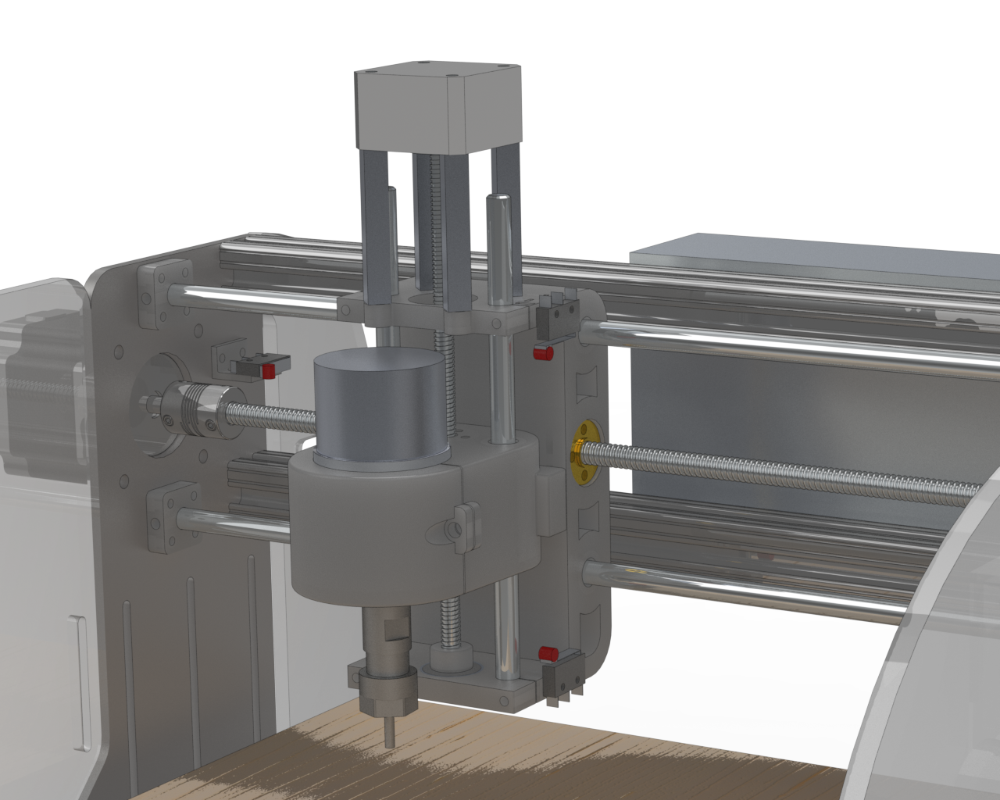
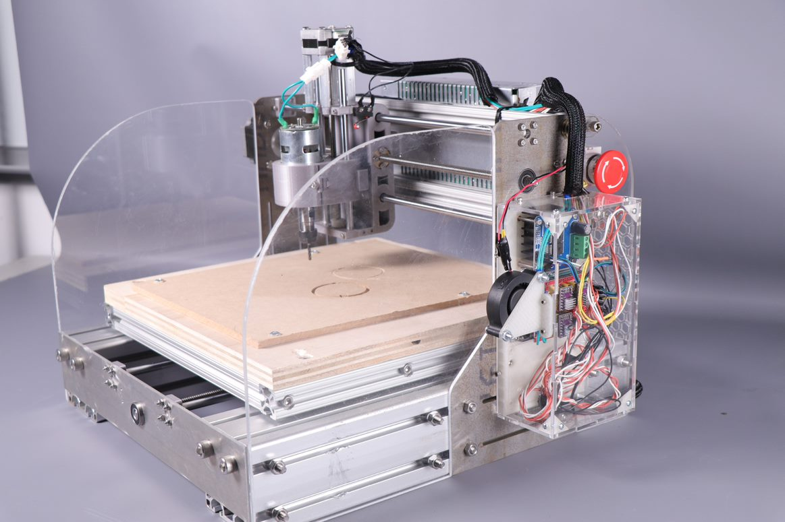

Mechanical
Frame
The frame of the gantry consists mainly of waterjetted sheet metal and t-slotted extruded aluminum. The base consists of two 80mm 80/20 extruded aluminum pieces, each 420 millimeters, this adds weight to the base of the mechanism and prevents vibrations from moving the entire assembly. All shafts and motors are mounted to waterjetted metal plates. This allowed for a high degree of precision and less error in the tolerances of the core mechanism parts (lead screws and linear rods). There are 4 plates in total: two on the front and back mounting the X axis and one on either side mounting the Y axis. These two plates are connected with two braces of 1in aluminum 80/20 for rigidity between them.
Spoilboard
There is a spoilboard mounted to the X axis, it consists of a 1in 80/20 frame with mounting holes for the wooden spoilboard or other types of mounting plates for the cutting material. This allows for the spoilboard to be removed and changed out when it gets old by simply removing 4 bolts. This also allows for a variety of clamping attachments to be mounted to the 80/20 frame if needed in the future.
Electronics Housing
A housing for the electronics is located on one of the side panels. An acrylic box surrounds the mounted electronics to prevent dust from coating and possibly damaging them. This would be especially important if cutting metal, as conductive dust could short the electronics. A fan blows across this enclosure to provide cooling to X and Y stepper drivers. These motors draw much more current, causing more load on the drivers. The fan mitigates this issue.
 Movement Systems
Movement Systems
The X, Y, and Z axes all move independently of each other, each with their own lead screw and 2 linear rods (8mm diameter) for stability. The X and Y axes use NEMA 23 steppers which provide a higher holding torque. These are attached to 8mm diameter, 2mm pitch lead screws that convert the rotational movement of the motor into linear movement of the gantry. The Z axis uses a NEMA 17 motor and 6.5mm diameter, 1.5mm pitch lead screw, as it requires less torque to plunge into the material.
We opted for a design where the Y axis and Z axis move the spindle whilst the X axis moves the cutting material. This significantly improved the error in tolerances and rigidity of the system. In a preliminary design, a prototype where the spindle moved in every axis. This led to the compounding tolerance error between systems to add up and affect performance. By splitting the axis control, one system is removed: leaving less room for error. Furthermore, this moves the location where the X axis is driven much closer to the cutting area, as it is directly under the spoilboard. This even further increases rigidity.
Spindle
Our spindle motor is sold as an upgrade to a commercial desktop CNC router intended to perform similar operations, cutting and engraving woods, plastics, and soft metals. It is compatible with 5mm ER11 collets. Any bit and collet purchased with this specification should function on our router and simply need the speed and feed rate adjusted. Currently, it is equipped with a .125in shank diameter collet and a .125in 4 flute straight cut end mill.
Safety
Two sheets of 3/16in polycarbonate are mounted to the sides of the router, shielding the users of the machine from any possible flying debris. The unprotected sides of the gantry are facing perpendicular to the electronics. A large emergency stop button that cuts power to the entire system is mounted on the acrylic siding.